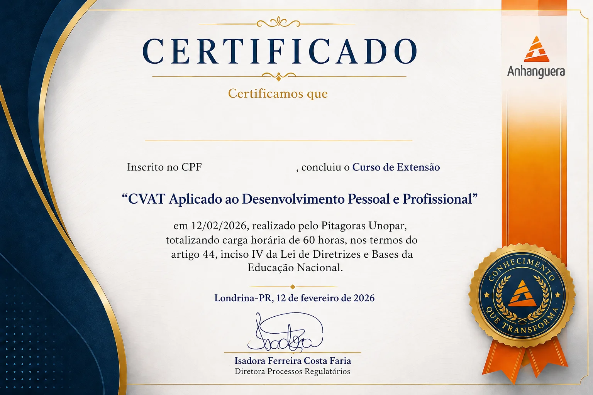

Pare de confiar só no feeling para avaliar pessoas. Domine o CVAT — a ferramenta de valores pessoais premiada internacionalmente — e leia perfis com precisão científica.
Formação de extensão universitária em Análise de Valores Pessoais e Cultura Organizacional, reconhecida pelo MEC. Você sai apto a aplicar, interpretar e devolver resultados com metodologia validada internacionalmente.
O que uma leitura errada de perfil custa de verdade
Estudos mostram que uma contratação errada pode custar até 12 vezes o valor do salário da posição — em retrabalho, turnover, treinamento perdido e impacto no clima da equipe. A mesma lógica vale pra coaching, consultoria e educação: decisão certa, no momento certo, evita esse custo antes que ele aconteça.
| Sem ferramenta validada | Testes vocacionais genéricos | Formação CVAT Aplicado | |
|---|---|---|---|
| Custo | Erro de decisão: até 12x o salário | "Grátis" — mas raso | R$ 490 |
| Base metodológica | Feeling e intuição | Sem validação científica | CVAT — origem na Cornell, prêmio de melhor teste psicométrico da Ásia (2015) |
| Profundidade do diagnóstico | Superficial, sujeito a viés | 1 dimensão, sem nuance | 4 dimensões, 16 subdimensões |
| Certificação | Nenhuma | Nenhuma | MEC — 60h |
| Método que você domina | Improviso repetido | Resultado pontual, sem repetição | Seu — para toda a carreira |
Com a primeira aplicação bem conduzida — numa contratação, numa devolutiva de coaching ou numa formação de equipe — o investimento já se paga.
Formação completa. Acesso real. Aplicação prática.
60h certificadas — MEC
Extensão universitária reconhecida. Certificado válido em editais, portfólio profissional e processos de habilitação.
Acesso à Plataforma CVAT
Para aplicar e interpretar perfis individuais e coletivos com base nos dados reais da ferramenta.
4 dimensões, 16 subdimensões
Conteúdo técnico completo sobre Trabalho, Relações Pessoais, Controle e Pensamento, com aula dedicada a cada subdimensão.
Encontros com o mentor
Conversas gravadas sobre casos reais, interpretações e nuances de perfis — direto de quem aplica no dia a dia.
Curso 100% gravado
Acesso imediato após a confirmação. Assista quando e quantas vezes quiser, no seu ritmo.
Apostila completa incluída
Todo o conteúdo do curso em material de apoio, pra consultar sempre que precisar — durante e depois da formação.
Suporte por IA
Agente de IA disponível pra esclarecer dúvidas na hora, sem esperar retorno de instrutor.
Estude de onde estiver — computador, tablet ou celular
Conteúdo Programático Completo
7 módulos · 60 horas de formação estruturada
- Introdução ao desenvolvimento humano: conceitos centrais
- A importância dos valores pessoais no comportamento humano
- Cultura organizacional e valores: como se relacionam
- A teoria por trás do CVAT: origem, bases científicas e reconhecimento internacional
- Quando, por que e para que usar a análise de valores
- O que é o CVAT: lógica da ferramenta e suas aplicações
- Entendendo as quatro grandes dimensões: Trabalho, Relações Pessoais, Controle, Pensamento
- Interpretação dos gráficos, relatórios e perfis
- Compreensão das 16 subdimensões
- O papel do especialista: ética, responsabilidade e impacto
- Dimensão Trabalho — Trabalho Duro, Tempo, Terminar Tarefa, Qualidade
- Dimensão Relações Pessoais — Afeto, Empatia, Sociabilidade, Lealdade
- Dimensão Controle — Dominância, Status, Negociação, Liderança
- Dimensão Pensamento — Abstração, Planejamento, Exposição, Flexibilidade
- Conversas gravadas sobre as dimensões com especialistas
- Casos reais discutidos em profundidade
- Interpretações e nuances dos perfis
- A importância da leitura contextualizada do CVAT
- CVAT em coaching e desenvolvimento individual
- CVAT em consultoria organizacional e formação de equipes
- CVAT em recrutamento e seleção
- CVAT como ferramenta para educadores e terapeutas
- Estratégias de apresentação, devolutiva e contrato de serviço
- Como oferecer o CVAT como produto no seu portfólio
- Casos de empresas e instituições que usam o CVAT
- Posicionamento profissional e diferenciação no mercado
- Empregabilidade: como o domínio do CVAT pode abrir portas
- Análise de 3 a 4 casos completos com diferentes perfis
- Simulações de devolutiva
- Diagnóstico coletivo
- Desafios interpretativos: quando os dados não batem com a narrativa

Modelo do certificado · 60h · Reconhecimento MEC via Pitágoras Unopar
Pronto para dominar a leitura de valores pessoais com precisão científica? → Garantir minha vaga
Do acesso à primeira aplicação real
1. Inscrição e acesso imediato
100% online, no seu ritmo. Você começa assim que a confirmação de pagamento chega.
2. Formação estruturada — 60h
Fundamentos, as 4 dimensões e 16 subdimensões, e aplicação prática com estudos de caso.
3. Encontros com o mentor
Casos reais discutidos em profundidade, com interpretações e nuances de perfis.
4. Certificado MEC
Emitido ao final com a carga horária completa. Válido para habilitação profissional e portfólio.

Clóvis Soler
Representante oficial do CVAT no Brasil
Referência nacional na aplicação do CVAT, ferramenta de análise de valores pessoais e cultura organizacional com base científica desenvolvida na Cornell University e premiada internacionalmente. Atua há mais de uma década formando profissionais na leitura de perfis comportamentais.
Formou mais de 1.000 profissionais e atende empresas de todos os portes, do empreendedorismo às maiores corporações do Brasil.
Essa formação é pra quem vai usar de verdade — não só colecionar certificado
Faz sentido pra você se
- ✓ Você é profissional de RH ou Gestão de Pessoas e quer ferramentas mais precisas para recrutamento, desenvolvimento e avaliação de talentos
- ✓ Você é coach, mentor, consultor ou terapeuta e quer oferecer intervenções mais alinhadas ao perfil motivacional dos seus clientes
- ✓ Você é educador ou líder e quer entender valores como base para engajamento e desempenho de equipes ou alunos
Não faz sentido se
- ✗ Você só quer um teste de personalidade rápido, sem intenção de aplicação profissional
- ✗ Você não pretende usar a ferramenta em contexto real de trabalho, educação ou atendimento
Pronto para dominar a leitura de valores pessoais com precisão científica?
Referência: uma contratação errada pode custar até 12x o valor do salário da posição.
Perguntas frequentes
CVAT Brasil Treinamentos e Consultoria LTDA · CNPJ 18.574.831/0001-32 · Política de Privacidade · Termos de Uso